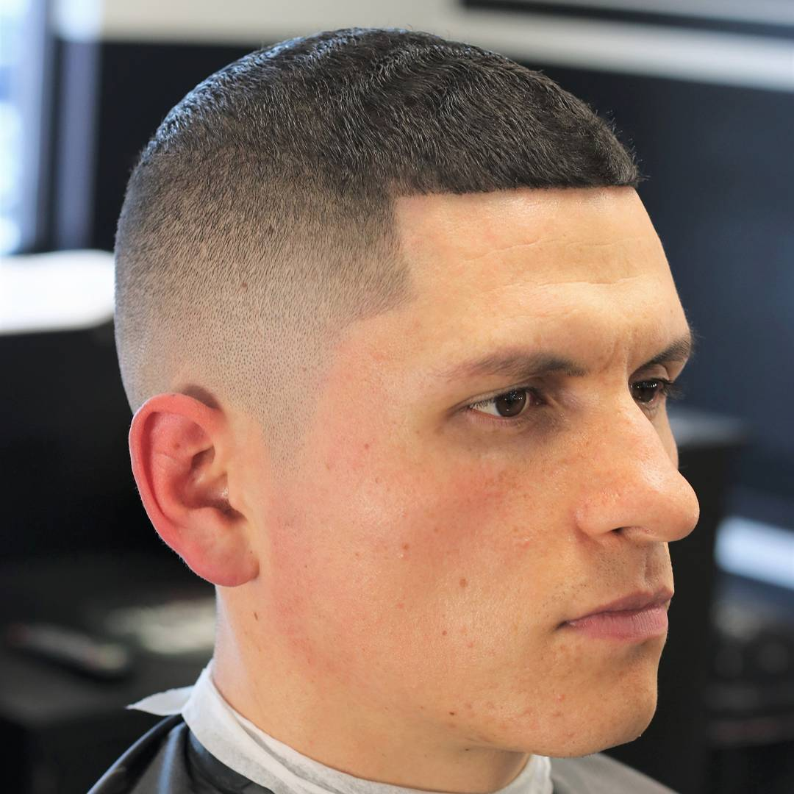
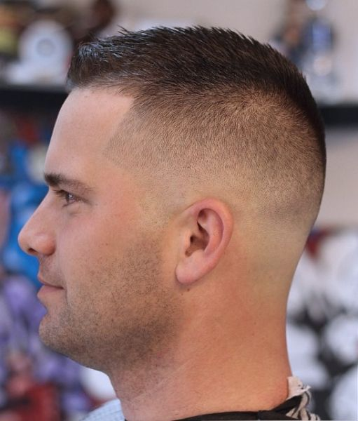
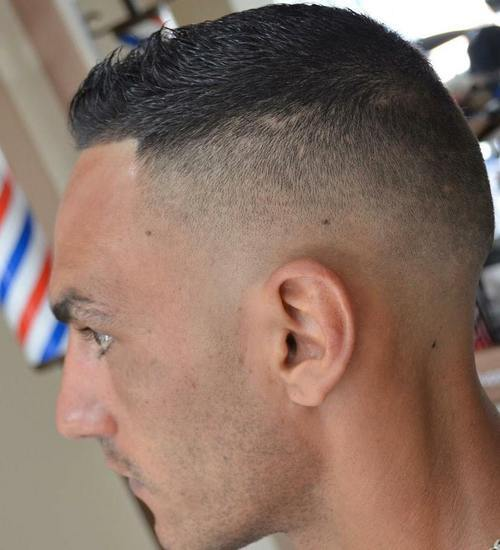

The High and Tight
Military personnel favor the high and tight for its clean simplicity - and for the patch of hair it leaves on the top of the head, which was originally left intact to help support the weight of a helmet. This buzz-cut variant is more restrictive than its cousin the crew cut because it doesn't taper from crown to neck.


